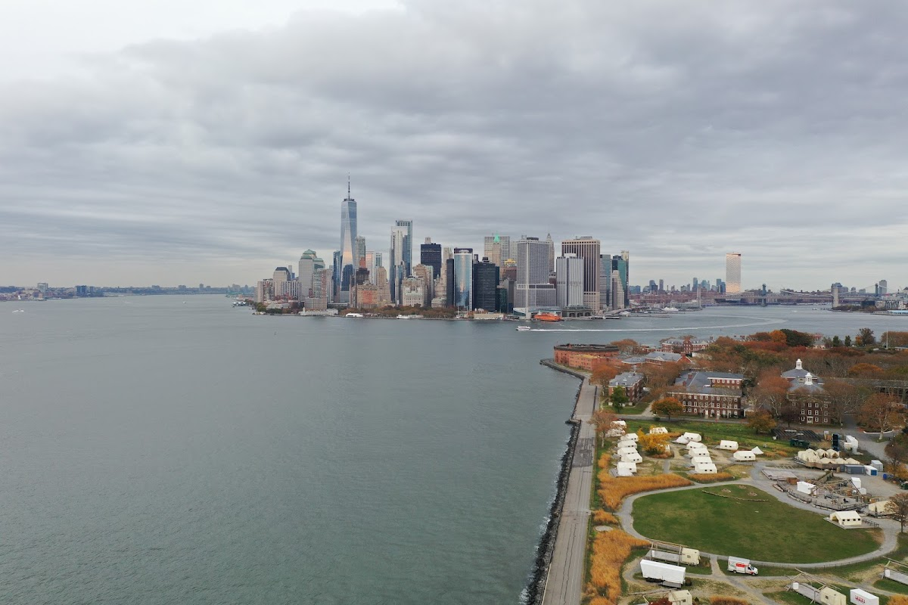
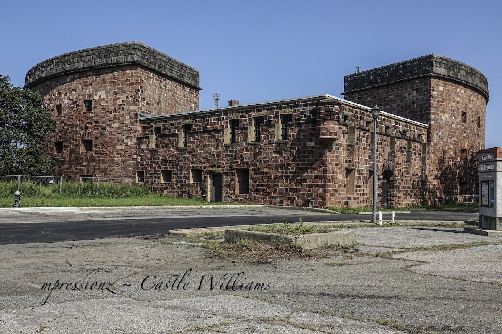
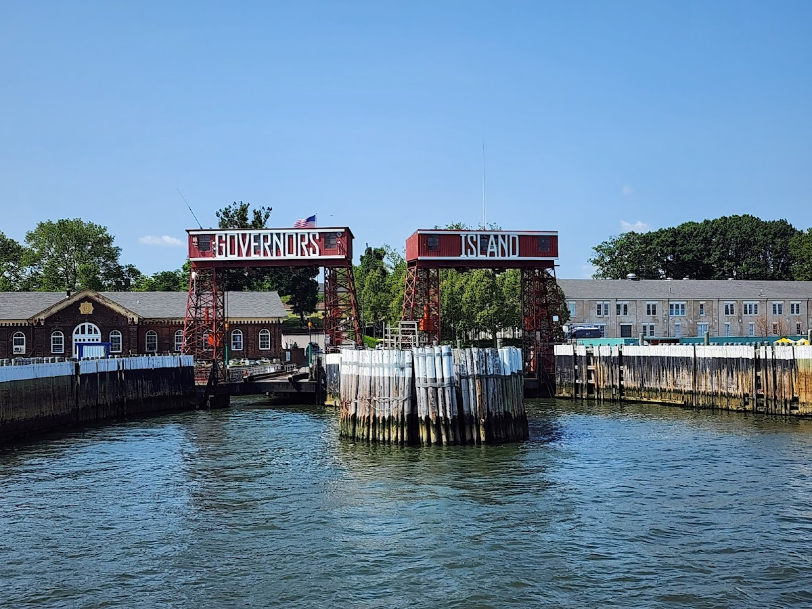
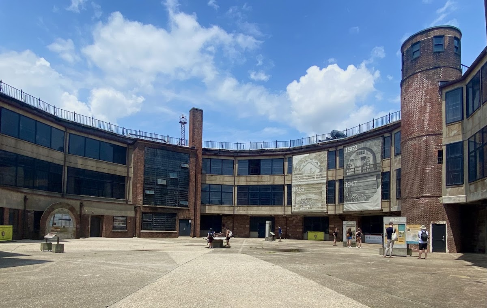

Unexpected places
Govoners Island
Why cant I live in one of the 1000 empy army baraks? Extremely disappointing amount of latent potential. A 172-acre island in New York Harbor, formerly a military base and now a public park and cultural venue.
Background
Governors Island has a rich history dating back to the colonial era. It served as a military outpost for both the British and American forces. In 2003, the island was transferred to the public and has since been developed into a recreational and cultural destination, featuring historic buildings, art installations, and open spaces.
Original AI-assisted background; not independently verified.
From the original map
An amazing place and depressing proof of the cities failure to make housing. there is literally an empty town filled with army barracks on this island. they are unoccupied :(
Check current access before visiting. A place on this map is not necessarily open to the public.
Nearby places
Straight-line distances, not walking routes.
Discussion & corrections




40.68922, -74.01854 · Explore the surrounding area ↗